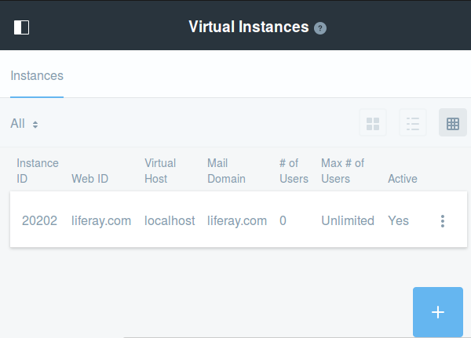

Liferay allows you to run more than one virtual instance on a single server. The Virtual Instances section of the Control Panel appears under the Configuration heading. This section lets you manage multiple Liferay instances from a single Liferay installation. Each instance’s data is kept separate from every other instance’s data. All instance data, however, is kept in the same database.
Each virtual instance has its own domain name. Liferay directs users to the proper instance based on this domain name. So before you configure an instance, configure its domain name in your network first. When you’re ready to add an instance, click the Add () button here.

Figure x: Add and manage virtual instances of Liferay in the Control Panel’s Configuration → Virtual Instances section.
You’ll be prompted for four fields and a check box:
Web ID: A general convention is to use the domain name for this. It’s a user-generated ID for the instance.
Virtual Host: Put the domain name you configured in your network here. When users are directed to your Liferay server via this domain name, Liferay will then be able to send them to the proper virtual instance.
Mail Domain: Enter the domain name for the mail host for this instance. Liferay will use this to send email notifications from the instance.
Max Users: Enter the maximum numbers of user accounts you would like your virtual instance to support.
Active: Use this check box to choose whether to create an active or an inactive virtual instance.
When you are finished filling out the form, click Save. Now navigate to the instance using your new domain name. You are brought to what looks like a clean install of Liferay. This is your new virtual instance which can be configured any way you like. Read the next section on configuring an instance’s settings to learn more about configuring your new instance.